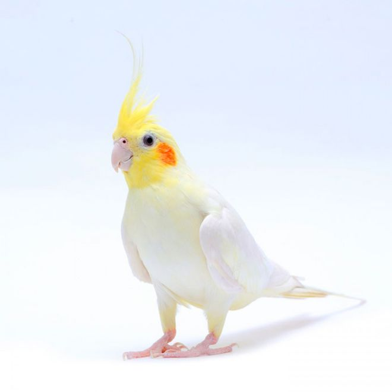
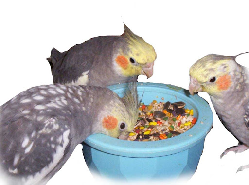

Artículo Destacado: Cacatúas Ninfas

Las Cacatúas ninfas son una especie endémica de Australia y una de las aves
usadas como mascota más comunes, ocupando el segundo lugar en popularidad
después del periquito australiano, además de ser la especie de cacatúa más
pequeña del mundo.
Leer Más
¿Por qué adoptar una Cacatúa Ninfa?
Se adaptan fácilmente a la vida familiar y aprenden a interactuar y
comunicarse con las personas que aman. Su esperanza de vida está entorno a los
15 años, pero con mucho cariño y una buena dieta a base de comida para ninfas
pueden llegar a vivir más de 20 años.
 Leer más
Leer más
Cómo ambientar el hábitad de tu ave
Para evitar que el ave se estrese y aburra, debemos ambientar su jaula. La
jaula debe ser grande para permitir que el ave abra sus alas dentro de ella.
Debemos colocar juguetes y accesorios de colores para que pueda picotear y
entretenerse diariamente. También, podemos colocar raitas, hojas y perchas
para que la cacatúa salte y se pare en ellas.
.png) Leer Más
Leer Más
Cómo alimentar correctamente a tu Ninfa
Las cacatúas ninfas deben tener una alimentación variada. Consumen un pelet
especial para su especie, mix de semillas (mijo, alpiste, linaza, chia, etc),
frutas y verduras. No olvidar también darle diariamente agua fresca.

Leer más
Otros cuidados que requieren
Limaje de pico, corte de uñas, cuidados veterinarios.
 Leer más
Leer más
.jpeg)